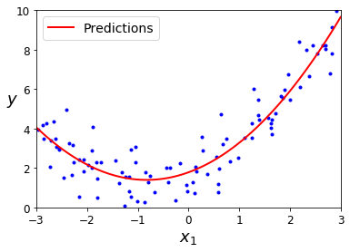

Training Linear Models
Before we used ML models without understanding how they work. Now we will try to look under the hood. We will look at two versions of Linear regression: regular closed-form equation $\beta = \frac{X’Y}{X’X}$ and iterative optimization Gradient Descent (GD) approach which tweaks model parameters to minimize cost function. Even though eventually GD will converge to the parameters $\beta$ estimated by the first method, GD is the important concepts that will help us to study neural networks.
Next we will look at the polynomial regression, which is more flexible than linear regression. It has more parameters and more prone to overfitting. Finally, we will look at regression models used in classification: Logistic Regression and Softmax Regression.
In Chapter 1, we looked at simple regression:
$life_satisfaction = \theta_0 + \theta_1 \times GDP_percapita$
This is a linear function of the input feature of one input feature. The model parameters are $\theta_0$ and $\theta_1$. In general regression has the following form:
$$\hat{y} = \theta_0 + \theta_1 x_1 + \theta_2 x_2 + … + \theta_n x_n$$
- $\hat{y}$ is the predicted value
- $n$ is the number of features
- $x_i$ is the $i^{th}$ feature
- $\theta_j$ is the $j^{th}$ model parameters. Number of parameters is $n+1$ because of the constant
We can write linear regression in the vector form:
$$\hat{y} = h_{\theta} (x) = \theta^T \cdot x$$
- $\theta^T$ is the transpose of vector of parameters or feature weights $\theta$.
- $\theta^T \cdot x$ is the dot product of vector of parameters $\theta^T$ and vector of features $x$.
- $h_{\theta} (x)$ is the hypothesis function or prediction using parameters $\theta$
First we train linear regression on training data minimizing Mean Square Error (MSE). Usually we use Root Mean Square Error (RMSE) as a metric to compare OLS models, the same set of parameters minimize both MSE and RMSE.
$$MSE(X, h_\theta) = \frac{1}{m}\sum^m_{i=1} \big(\theta^T \cdot x^{(i)} - y^{(i)}\big)^2$$
Later we will refer to $h_\theta$ as just $h$, and $MSE(\theta)$ instead of $MSE(X,h_\theta)$
Normal regression find $\theta$ that minimizes MSE:
$$ \hat{\theta} = (\pmb{X}^T \cdot \pmb{X})^{-1} \cdot \pmb{X}^T \cdot \pmb{y}$$
- $\hat{\theta}$ is the $\theta$ that minimizes MSE
- $\pmb{\theta}$ is the vector of target values $y^{(1)}$ to $y^{(m)}$.
Note: the first releases of the book implied that the LinearRegression class was based on the Normal Equation. This was an error, my apologies: as explained above, it is based on the pseudoinverse, which ultimately relies on the SVD matrix decomposition of $\mathbf{X}$ (see chapter 8 for details about the SVD decomposition). Its time complexity is $O(n^2)$ and it works even when $m < n$ or when some features are linear combinations of other features (in these cases, $\mathbf{X}^T \mathbf{X}$ is not invertible so the Normal Equation fails), see issue #184 for more details. However, this does not change the rest of the description of the LinearRegression class, in particular, it is based on an analytical solution, it does not scale well with the number of features, it scales linearly with the number of instances, all the data must fit in memory, it does not require feature scaling and the order of the instances in the training set does not matter.
There is a mistake in the book: the LinearRegression class does not actually use the Normal Equation, it computes the pseudoinverse of X (specifically the Moore-Penrose pseudoinverse), and it multiplies it by y. It gives the same result as the normal equation, but it has two important advantages:
It is $O(n^2)$ instead of $O(n^2.4)$ to $O(n^3)$. So it’s much faster than the Normal Equation when there are many features.
It behaves better when some of the eigenvalues of X are small (or equal to zero). In plain English, this is when some features are highly correlated (or perfectly correlated, that is when one feature is a linear combination of the others). It also behaves well when m < n. More details below.
When some features are linear combinations of the others, or when m < n, the matrix $X^T$, $X$ is not invertible (it is said to be “singular” or “degenerate”). So the Normal Equation cannot be used. However, the pseudoinverse is always defined: it is based on the SVD decomposition of the matrix $X$, which finds the eigenvalues and eigenvectors of the matrix (as explained in chapter 8 on dimensionality reduction, when talking about PCA), so it can simply ignore the eigenvalues that are smaller than a tiny threshold. This means that the LinearRegression class will find the optimal solution even when some features are redundant or when m < n.
This also explains two parameters that the LinearRegression predictor learns during training:
rank_ is the rank of the matrix X, i.e., the number of eigenvalues that are not tiny or zero.
singular_ is the list of eigenvalues (just like PCA().fit(X).singular_values_). If a feature is a linear combination of other features, then one of these features will have a tiny or zero eigenvalue.
Fortunately, this error does not change much of what I wrote in the book about the LinearRegression class: it is based on an analytical solution, it performs poorly when there is a large number of features, it is linear with regards to the number of instances, it does not support out-of-core (i.e., all data must fit in memory to use it), it does not require feature scaling, the order of the instances in the training set does not matter, and so on. You could say it’s an implementation detail, but it’s quite an important one, and I apologize for the error.
Setup
First, let’s make sure this notebook works well in both python 2 and 3, import a few common modules, ensure MatplotLib plots figures inline and prepare a function to save the figures:
1 | # To support both python 2 and python 3 |
Linear regression using the Normal Equation
1 | np.random.seed(42) |
We generate data with a noisy linear trend, let’s plot it.
1 | plt.plot(X, y, "b.") |
Let’s compute $\hat{\theta}$ using $(X’X)^{-1}\cdot(X’y)$. Command inv() inverts a matrix. First we add constant term to the X, which will have two features ($X_1$ and constant). $X = X[1,X_1]$. In Python matrix transposition is X_b.T $=X’$, matrix multuplication $X’X$ = X_b.T.dot.X_b
1 | X_b = np.c_[np.ones((100, 1)), X] # add x0 = 1 to each instance |
array([[4.21509616],
[2.77011339]])Actual function to generate noise was $y = 4 + 3x + u$, where $u$ is the Gaussian noise. If we were to have a lot of data we would have estimated $\theta_0 = 4$ and $\theta_1 = 3$, instead we estimate $\theta_0 = 4.21$ and $\theta_1 = 2.77$. We can see how adding more observations moves us closer to the desired parameters. We are getting closer to $[4,3]$ as $n \rightarrow \infty$
1 | np.random.seed(42) |
n= 100 theta0 = [4.21509616] theta1 = [2.77011339]
n= 1000 theta0 = [4.17478026] theta1 = [2.92260742]
n= 10000 theta0 = [4.03177675] theta1 = [2.98034911]We can predict y for the values of x = (0,2), extreme value of x to plot the regression function.
1 | np.random.seed(42) |
array([[4.21509616],
[9.75532293]])Plot the regression line using extreme values.
1 | plt.plot(X_new, y_predict, "r-", linewidth=2, label="Predictions") |
We can simply use prepackaged Linear Regression model from sklearn.
1 | from sklearn.linear_model import LinearRegression |
(array([4.21509616]), array([[2.77011339]]))1 | lin_reg.predict(X_new) |
array([[4.21509616],
[9.75532293]])The LinearRegression class is based on the scipy.linalg.lstsq() function (the name stands for “least squares”), which you could call directly:
1 | theta_best_svd, residuals, rank, s = np.linalg.lstsq(X_b, y, rcond=1e-6) |
array([[4.21509616],
[2.77011339]])This function computes $X^{+}y$, where $X^+$ is the pseudoinverse of $X$ (specifically the Moore-Penrose inverse). You can use np.linalg.pinv() to compute the pseudoinverse directly:
1 | np.linalg.pinv(X_b).dot(y) |
array([[4.21509616],
[2.77011339]])If we have complete linear dependence, the classication regression will fail, but SVD will not.
1 | np.random.seed(42) |
[[-1008.14178262]
[ 2039.99368946]
[-1544.3488403 ]]1 | np.linalg.pinv(Q_b).dot(W) |
array([[4.21509616],
[1.38505669],
[1.38505669]])1 | lin_reg.fit(Q_b, W) |
(array([4.21509616]), array([[0. , 1.38505669, 1.38505669]]))Linear regression using batch gradient descent
The Normal Equation computes the inverse of $X^T · X$, which is an $n × n$ matrix (where n is the number of features). The computational complexity of inverting such a matrix is typically about O$(n^{2.4})$ to $O(n^3)$ (depending on the implementation). In other words, if you double the number of features, you multiply the computation time by roughly $2^{2.4} = 5.3$ to $2^3 = 8$.
- However, the question is linear to the number of instances (observations) $O(m)$, so we can handle large datasets if they fit in the memory.
- Once the coefficients are estimated, predictions are fast to make, the complexity is linear with respect to both features and instances, twice as many features will take twice the time.
Next we will look how to estimate linear with very large datasets
Gradient descent minimizes a cost function. Starting with several random numbers, you try steps in different directions testing if a step minimizes a cost function. We stop the algorithm converges – reduction in cost function stopped. (picture).
- An important parameter in Gradient Descent is the size of the steps, determined by the learning rate hyperparameter. If the learning rate is too small, then the algorithm will have to go through many iterations to converge, which will take a long time.
- If the learning rate is too high, you might jump across the valley and end up on the other side, possibly even higher up than you were before. (picture)
- Real-life cost function is complex and multi-dimensional. Starting point, direction of change, and the step-size can all lead to success or failure of optimization (picture).
MSE function of linear regression is convininent for optimization. It is:
- Convex – if you pick any two points on the curve, the line segment joining them never crosses the curve). Hence, there are not local minima, only global minimum.
- Lipschitz Continuous – the slope does not change very rapidly, i.e. the derivative is bounded a by a real number: $\mid f(x_{1}) - f(x_{2}) \mid \leq K\mid x_{1} - x_{2}\mid$, where $K \in \mathbf{R}$
These two facts have a great consequence: Gradient Descent is guaranteed to approach arbitrarily close the global minimum (if you wait long enough and if the learning rate is not too high).
Regression with two parameters looks like a bowl, where need to find a minimum. If the features are scaled the bowl is round, and we will reach the bottom relatively quickly. If the features are not scaled different scales confuse the algorithm into thinking that features are important than others.
Training a model means searching for a combination of model parameters that minimizes a cost function. It is a search in the model’s parameter space: the more parameters a model has, the more dimensions this space has, and the harder the search is. Fortunately, since the cost function is convex in the case of Linear Regression, the needle is simply at the bottom of the bowl, so there is only one minimum point.
Batch Gradient Descent
To implement Gradient Descent, we compute the gradient of the cost function with regards to each model parameter $θj$. In other words, you need to calculate how much the cost function will change if you change θj just a little bit.This is called a partial derivative. (Ex. mountain slopes facing different directions). Next we compute the partial derivative of the cost function with regards to parameter $\theta_j$, noted $\frac{\partial MSE(\theta)}{\partial \theta_j}$.
$$
\frac{\partial MSE(\theta)}{\partial \theta_j} = \frac{2}{m}\sum\limits{i=1}^m \big(\theta^{T} \cdot x^{(i)} - y^{(i)}\big)x^{(i)}
$$
We estimate a vector of gradients in one go. The gradient vector, noted $\nabla\theta MSE(\theta)$, contains all the partial derivatives of the cost function (one for each model parameter):
\nabla\theta MSE(\theta) \begin{cases}
\frac{\partial MSE(\theta)}{\partial \theta_0}\\
\frac{\partial MSE(\theta)}{\partial \theta_1}\\
\vdots \\
\frac{\partial MSE(\theta)}{\partial \theta_n}\\
\end{cases}Notice that this formula involves calculations over the full training set X, at each Gradient Descent step! This is why the algorithm is called Batch Gradient Descent: it uses the whole batch of training data at every step. As a result it is terribly slow on very large training sets. However, Gradient Descent scales well with the number of features; training a Linear Regression model when there are hundreds of thousands of features is much faster using Gradient Descent than using the Normal Equation.
Once you have the gradient vector, which points uphill, just go in the opposite direction. This means subtracting $\nabla\theta MSE(\theta)$ from $\theta$. This is where the learning rate $\eta$ comes into play. multiply the gradient vector by $\eta$ to determine the size of the downhill step:
$$
\theta^{next :step} = \theta - \eta \nabla\theta MSE(\theta)
$$
1 | # set step at 0.1 |
1 | theta |
array([[4.21509616],
[2.77011339]])1 | # This is what we got from Matrix OLS. |
n= 100 theta0 = [4.21509616] theta1 = [2.77011339]Let’s look at the first 10 steps of gradient descent algorithms with different step sizes.
1 | # set a path vector |
1 | np.random.seed(42) |
- On the left, the learning rate is too low: the algorithm will eventually reach the solution, but it will take a long time.
- In the middle, the learning rate looks pretty good: in just a few iterations, it has already converged to the solution
- On the right, the learning rate is too high: the algorithm diverges, jumping all over the place and actually getting further and further away from the solution at every step
If you have enough time it is always better to use small steps and a lot of iterations. If the data is too big for that, then you need to experiment using grid search.
How to set the number of iterations?
If you set it too small, your may not find the minimum, if it is too large you may waste time without improving the fit. A good ways it set minimum gradient that would continue the iterations. If the rate of improvement is less than the minimum tolerance $\epsilon$, it is a good idea to stop the iterations.
When the cost function is convex and its slope does not change abruptly (as is the case for the MSE cost function), the Batch Gradient Descent with a fixed learning rate has a convergence rate of $O = \frac{1}{Iterations}$. In other words, if you divide the tolerance $\epsilon$ by 10 (to have a more precise solution), then the algorithm will have to run about 10 times more iterations.
Stochastic Gradient Descent 随机梯度下降
- Batch Gradient Descent uses the whole training set to compute the gradients at every step, which makes it very slow when the training set is large.
- Stochastic Gradient Descent (SGD) just picks a random instance in the training set at every step and computes the gradients based only on that single instance. This makes the algorithm much faster since it has very little data to manipulate at every iteration. It also makes it possible to train on huge training sets, since only one instance needs to be in memory at each iteration.
- SGD, due to its stochastic (i.e., random) nature, is much less regular than Batch Gradient Descent: instead of gently decreasing until it reaches the minimum, the cost function will bounce up and down, decreasing only on average. Over time it will end up very close to the minimum, but once it gets there it will continue to bounce around, never settling down . So once the algorithm stops, the final parameter values are good, but not optimal. (picture)
Note that since instances are picked randomly, some instances may be picked several times per epoch while others may not be picked at all. If you want to be sure that the algorithm goes through every instance at each epoch, another approach is to shuffle the training set, then go through it instance by instance, then shuffle it again, and so on. However, this generally converges more slowly.
1 | # set path array |
1 | # number of iterations |
1 |
1 | thetapath = np.array(theta_path_sgd) |
1 | thetapath[49,:] |
array([[4.21200431],
[2.74968529]])Remember that correct values are $[4.21509616, 2.77011339]$, we are very close
1 | # First 20 steps of iteration 1 |
[<matplotlib.lines.Line2D at 0x248543aa358>]1 | #40-50 steps |
[<matplotlib.lines.Line2D at 0x24854424d30>]We are close, but we are not really converging to the correct value. Next we estimate a SGD regression included in sklearn. Number of iterations is 50. The defaults to optimizing the squared error cost function. We run 50 epochs, starting with a learning rate of 0.1 (eta0=0.1), using the default learning schedule (different from the preceding one), and it does not use any regularization (penalty=None; more details on this shortly):
1 | from sklearn.linear_model import SGDRegressor |
(array([4.24365286]), array([2.8250878]))Not great, let’s increase the number of iterations
1 | from sklearn.linear_model import SGDRegressor |
(array([4.24365286]), array([2.8250878]))Much better. Alternatively we can reduce tolerance 10 times.
1 | from sklearn.linear_model import SGDRegressor |
(array([4.24365286]), array([2.8250878]))The results got worse we are dancing aroung correct value.
Mini-batch gradient descent
Instead of computing the gradients based on the full training set (as in Batch GD) or based on just one instance (as in Stochastic GD), Mini-batch GD computes the gradients on small random sets of instances called mini-batches. The main advantage of Mini-batch GD over Stochastic GD is that you can get a performance boost from hardware optimization of matrix operations, especially when using GPUs.
The algorithm’s progress in parameter space is less erratic than with SGD, especially with fairly large mini-batches. As a result, Mini-batch GD will end up walking around a bit closer to the minimum than SGD. But, on the other hand, it may be harder for it to escape from local minima (in the case of problems that suffer from local minima, unlike Linear Regression as we saw earlier). Next we will show the paths taken by the three Gradient Descent algorithms in parameter space during training. They all end up near the minimum, but Batch GD’s path actually stops at the minimum, while both Stochastic GD and Mini-batch GD continue to walk around. However, the Batch GD takes a lot of time to take each step, and Stochastic GD and Mini-batch GD would also reach the minimum if you used a good learning schedule.
1 | theta_path_mgd = [] |
1 | print("final theta =",theta) |
final theta = [[4.25214635]
[2.7896408 ]]1 | # Lets create vetors for our paths |
1 |
1 | plt.figure(figsize=(7,4)) |
1 | # Plot last 50 steps |
Polynomial regression
What if your data is actually more complex than a simple straight line? A simple way to use Linear model for non-linear data is to add powers of each feature as new features, then train a linear model on this extended set of features. This technique is called Polynomial Regression.
1 | import numpy as np |
X is 100 observations draws from $X = 6*R - 3$, where $R \in (0,1)$. Then we estimate $Y = 0.5X^2 + X + 2 + R$.
1 | m = 100 |
Plot X and Y
1 | plt.plot(X, y, "b.") |
1 | # Import package to craeate polinomial features |
array([-0.75275929])1 | print(X_poly[0]) |
[-0.75275929 0.56664654]
0.5666465486813041 | # Fit polinomial regression |
(array([1.78134581]), array([[0.93366893, 0.56456263]]))The model estimates $\hat{Y} = 0.56X^2 + 0.93X + 1.78 + R$, whereas a real model is $Y = 0.5X^2 + X + 2 + R$. Polinomial regresion is capable of finding relationships
between features by addint all combinations of features up to the given degree. For
example, if there were two features $a$ and $b$, PolynomialFeatures with degree=3 would not only add
the features $a^2$, $a^3$, $b^2$, and $b^3$, but also the combinations $ab$, $a^{2}b$, and $ab^2$. Polynomial features models with a degree $d$ and $n$ features, would produce $\frac{(n+d)!}{d!n!}$ combinations of features.
1 | # Generate space of drawing a solid prediction line. |

High-degree Polynomial Regression fits the training data much better than the plain Linear Regression. Next we estimate a 300-degree polynomial model to the preceding training data, and compare the result with a pure linear model and a quadratic model (2nd degree polynomial).
1 | from sklearn.preprocessing import StandardScaler |
- This high-degree Polynomial Regression model is severely overfitting the training data, while
the linear model is underfitting it. The model that will generalize best in this case is the quadratic model. - The data was generated using a quadratic model, but in general you won’t know what
function generated the data. In Chapter 2 you used cross-validation to get an estimate of a model’s generalization performance.
Another way is to look at the learning curves: these are plots of the model’s performance on the training
set and the validation set as a function of the training set size. To generate the plots, simply train the model
several times on different sized subsets of the training set. The following code defines a function that plots
the learning curves of a model given some training data:
1 | # Import MS and train-test split |
1 | # Set large data |
When there are just one or two instances in the training set, the model can fit them perfectly, which is why the curve starts
at zero. But as new instances are added to the training set, it becomes impossible for the model to fit the
training data perfectly, both because the data is noisy and because it is not linear at all. So the error on the
training data goes up until it reaches a plateau, at which point adding new instances to the training set
doesn’t make the average error much better or worse.
When the model is trained on very few training instances, it is incapable of generalizing properly, which is why the validation error is initially quite big. Then as the model is shown more training examples, it learns and thus the validation error slowly goes down. However, once again a straight line cannot do a good job modeling the data, so the error ends up at a plateau, very close to the other curve. These learning curves are typical of an underfitting model. Both curves have reached a plateau; they are close and fairly high.
Now let’s look at the learning curves of a 10th-degree polynomial model on the same data.
1 | from sklearn.pipeline import Pipeline |
These learning curves look a bit like the previous ones, but there are two very important differences:
- The error on the training data is much lower than with the Linear Regression model.
- There is a persistent gap between the curves. This means that the model performs significantly better on the
training data than on the validation data, which is the hallmark of an overfitting model. However, if you used a much larger training set, the two curves would continue to get closer.
1 | polynomial_regression = Pipeline([ |
Maybe we have too few obervations?
1 | # Set large data |
1 | polynomial_regression = Pipeline([ |
1 | polynomial_regression = Pipeline([ |
We fixed overfitting issues by using more data.
Regularized models
A good way to reduce overfitting is to regularize the model (i.e., to constrain it): the fewer degrees of freedom it has, the harder it will be for it to overfit the data. For example, a simple way to regularize a polynomial model is to reduce the number of polynomial degrees.
For a linear model, regularization is typically achieved by constraining the weights of the model. We will
now look at Ridge Regression, Lasso Regression, and Elastic Net, which implement three different ways
to constrain the weights.
Ridge Regression
Ridge Regression (also called Tikhonov regularization) is a regularized version of Linear Regression: a regularization term equal to is added to the cost function. This forces the learning algorithm to not only fit the data but also keep the model weights as small as possible. Note that the regularization term should only be added to the cost function during training. Once the model is trained, you want to evaluate the model’s performance using the unregularized performance measure.
The hyperparameter $\alpha$ controls how much you want to regularize the model. If $\alpha = 0$ then Ridge Regression is just Linear Regression. If $\alpha$ is very large, then all weights end up very close to zero and the result is a flat line going through the data’s mean. Ridge regression cost function, where we add a sum of squared parameters.
$$ J(\theta) = MSE(\theta) + \alpha \frac{1}{2} \sum^m_{i=1} \theta^{2}_i$$
Note that the bias term $\theta_0$ is not regularized (the sum starts at $i = 1$, not $0$). If we define $w$ as the vector of
feature weights ($\theta_1$ to $\theta_n$), then the regularization term is simply equal to $\frac{1}{2}(\lVert w \rVert _2)^2$, where $\lVert . \rVert _2$ is teh $l_2$ norm of the weight vector. It is important to scale the data (e.g., using a StandardScaler) before performing Ridge Regression, as it is sensitive to the scale
of the input features. This is true of most regularized models. For Gradient Descent, just add $\alpha w$ to the MSE gradient
vector.
Next we will show several Ridge models trained on some linear data using different $\alpha$ value. On the left, plain Ridge models are used, leading to linear predictions. On the right, the data is first expanded using PolynomialFeatures(degree=10), then it is scaled using a StandardScaler, and finally the Ridge models are applied to the resulting features: this is Polynomial Regression with Ridge regularization.
Increasing $\alpha$ leads to flatter (i.e., less extreme, more reasonable) predictions; this reduces the
model’s variance but increases its bias.
As with Linear Regression, we can perform Ridge Regression either by computing a closed-form
equation or by performing Gradient Descent. The closed-form solution (where $A$ is the $n \times n$ identity matrix except with a 0 in the top-left cell, corresponding to the bias term).
$$ \hat{\theta} = ( X^T \cdot X + \alpha A)^{-1} \cdot X^T \cdot y$$
Remember the regression without ridge it:
$$ \hat{\theta} = ( X^T \cdot X )^{-1} \cdot X^T \cdot y$$
1 | from sklearn.linear_model import Ridge |
1 | Coefficients from <class 'sklearn.linear_model.ridge.Ridge'> with alpha = 0 |
1 | Training Errors Linear regression with Ridge [0.3850221633585592, 0.3931885655081954, 0.462567291650715] |
Ridge regression improves fit of complex polynomial model and worsens the fit of simple linear model.
Lasso Regression
Least Absolute Shrinkage and Selection Operator Regression (simply called Lasso Regression) is another regularized version of Linear Regression: just like Ridge Regression, it adds a regularization term to the cost function, but it uses the $l_1$ norm of the weight vector instead of half the square of the $l_2$ norm.
$$ J(\theta) = MSE(\theta) + \alpha \frac{1}{2} \sum^m_{i=1} |\theta_i|$$
An important characteristic of Lasso Regression is that it tends to completely eliminate the weights of the
least important features (i.e., set them to zero). For example, the dashed line in the right plot on a figure below (with $\alpha$ = $10^{-7}$) looks quadratic, almost linear: all the weights for the high-degree polynomial features are equal to zero. In other words, Lasso Regression automatically performs feature selection and outputs a sparse model (i.e., with few nonzero feature weights).
1 | from sklearn.linear_model import Lasso |
1 | Coefficients from <class 'sklearn.linear_model.coordinate_descent.Lasso'> with alpha = 0 |
Training Errors Linear regression with Lasso [0.3850221633585592, 0.3983174004851076, 0.5162468019225317]
Validation Errors Linear regression with Lasso [0.2931679786457559, 0.3374260613813014, 0.5127463561383779]
Training Errors Polynomial regression with Lasso [0.3252732506662376, 0.383267741215846, 0.5162468019225317]
Validation Errors Polinomial regression with Lasso [0.28745132128253525, 0.30262353461319985, 0.5127463561383779]
In our example Lasso regression worsens the fit.
For example, the dashed line in the right plot on (with $\alpha$ = 0.02) looks almost linear: it is not completely zero, there are positive weights on $X^8$, $X^9$, and $X^10$. In other words, Lasso Regression automatically performs feature selection and outputs asparse model (i.e., with few nonzero feature weights).
Elastic net
Elastic Net is a middle ground between Ridge Regression and Lasso Regression. The regularization term
is a simple mix of both Ridge and Lasso’s regularization terms, and you can control the mix ratio $r$. When
$r = 0$, Elastic Net is equivalent to Ridge Regression, and when $r = 1$, it is equivalent to Lasso Regression.
$$ J(\theta) = MSE(\theta) + r \alpha \frac{1}{2} \sum^m_{i=1} |\theta_i| + \frac{1-r}{2} \sum^m_{i=1} \theta_i^2 $$
So when should you use Linear Regression, Ridge, Lasso, or Elastic Net? It is almost always preferable
to have at least a little bit of regularization, so generally you should avoid plain Linear Regression.
- Ridge is a good default,
- if you suspect that only a few features are actually useful, you should prefer Lasso or Elastic Net since they tend to reduce the useless features’ weights down to zero.
- In general, Elastic Net is preferred over Lasso since Lasso may behave erratically when the number of features is greater than the number of training instances or when several features are strongly correlated.
1 | np.random.seed(42) |
best model has alpha = 0.01 l1_ratio = 1
Early Stopping
A very different way to regularize iterative learning algorithms such as Gradient Descent is to stop training as soon as the validation error reaches a minimum. This is called early stopping. Figure next shows a complex model (in this case a high-degree Polynomial Regression model) being trained using Batch Gradient Descent. As the epochs go by, the algorithm learns and its prediction error (RMSE) on the training set naturally goes down, and so does its prediction error on the validation set. However, after a while the validation error stops decreasing and actually starts to go back up. This indicates that the model has started to overfit the training data. With early stopping you just stop training as soon as the validation error reaches the minimum.
1 | np.random.seed(42) |
Logistic regression
Some regression algorithms can be used for classification as well (and vice versa). Logistic Regression (also called Logit Regression) is commonly used to estimate the
probability that an instance belongs to a particular class (e.g., what is the probability that this email is
spam?). If the estimated probability is greater than 50%, then the model predicts that the instance belongs
to that class (called the positive class, labeled “1”), or else it predicts that it does not (i.e., it belongs to
the negative class, labeled “0”). This makes it a binary classifier
$$ \hat{p} = h_\theta (x) = \sigma(\theta^T \cdot x)$$
Logit function is:
$$ \sigma(t) = \frac{1}{1 + exp(-t)}$$
1 | t = np.linspace(-10, 10, 100) |
if $\hat{p} < 0.5$ then $\hat{y} = 0$
if $\hat{p} > 0.5$ then $\hat{y} = 1$
Training and cost function
The objective of training is to set the parameter vector $\theta$ so that the model estimates high probabilities for positive instances ($y = 1$) and low probabilities for negative instances ($y = 0$). This idea is captured by the cost function shown:?
$$
c(\theta) = \begin{cases}
-log(\hat{p}) & \text{if } y = 1\
-log(1 - \hat{p}) & \text{if } y = 0
\end{cases}
$$
$$
$-log(\hat{p})$ grows very large as $\hat{p}$ approaches $0$, and $-log(1 - \hat{p})$ grows very large as $\hat{p}$ approaches 1. The cost of the training set is the sum of the costs function for all instances:
$$
$$
J(\theta) = - \frac{1}{m} \sum^m_{i=1}[y^{(i)}log(\hat{p}^{(i)}) + (1 - y^{(i)})log(1-\hat{p}^{(i)})]
$$
There is no closed form solution. However, the gradient is convex, so we can find global minimum. The partial deriviatives of the cost function with regards to the jth model parameters $\theta_j$ is:
$$
\frac{\partial J(\theta)}{\partial \theta} = \frac{1}{m} \sum^m_{i=1})(\sigma(\theta^T \cdot x^{(i)}) - y^{(i)})x^{(i)}_j
$$
After we have vector of partial deriviatives we can use it in the Batch Gradient Descent
algorithm, or mini-Batch or Stochastic.
Decisions Boundaries
Let’s use the iris dataset to illustrate Logistic Regression. This is a famous dataset that contains the sepal
and petal length and width of 150 iris flowers of three different species: Iris-Setosa, Iris-Versicolor, and
Iris-Virginica. We will build a classifier to detect the Iris-Virginica type based only on the petal width feature. First
let’s load the data:
1 | from sklearn import datasets |
[‘data’, ‘target’, ‘target_names’, ‘DESCR’, ‘feature_names’, ‘filename’]
1 | print(iris.DESCR) |
Iris plants dataset
Data Set Characteristics:
:Number of Instances: 150 (50 in each of three classes)
:Number of Attributes: 4 numeric, predictive attributes and the class
:Attribute Information:
- sepal length in cm
- sepal width in cm
- petal length in cm
- petal width in cm
- class:
- Iris-Setosa
- Iris-Versicolour
- Iris-Virginica
:Summary Statistics:
============== ==== ==== ======= ===== ====================
Min Max Mean SD Class Correlation
============== ==== ==== ======= ===== ====================
pal length: 4.3 7.9 5.84 0.83 0.7826
sepal width: 2.0 4.4 3.05 0.43 -0.4194
petal length: 1.0 6.9 3.76 1.76 0.9490 (high!)
petal width: 0.1 2.5 1.20 0.76 0.9565 (high!)
============== ==== ==== ======= ===== ====================
:Missing Attribute Values: None
:Class Distribution: 33.3% for each of 3 classes.
:Creator: R.A. Fisher
:Donor: Michael Marshall (MARSHALL%PLU@io.arc.nasa.gov)
:Date: July, 1988
The famous Iris database, first used by Sir R.A. Fisher. The dataset is taken
from Fisher’s paper. Note that it’s the same as in R, but not as in the UCI
Machine Learning Repository, which has two wrong data points.
This is perhaps the best known database to be found in the attern recognition literature. Fisher’s paper is a classic in the field and is referenced frequently to this day. (See Duda & Hart, for example.) The data set contains 3 classes of 50 instances each, where each class refers to a type of iris plant. One class is linearly separable from the other 2; the latter are NOT linearly separable from each other.
1 | import numpy as np |
1 | from sklearn.linear_model import LogisticRegression |
1 | LogisticRegression(C=1.0, class_weight=None, dual=False, fit_intercept=True, |
1 | # Green is the probability of Iris-Virginica, blue is the probability of Not Iris-Virginica. |
The figure in the book actually is actually a bit fancier:
1 | X_new = np.linspace(0, 3, 1000).reshape(-1, 1) |
The petal width of Iris-Virginica flowers (represented by triangles) ranges from 1.4 cm to 2.5 cm, while the other iris flowers (represented by squares) generally have a smaller petal width, ranging from 0.1 cm to 1.8 cm. Notice that there is a bit of overlap. Above about 2 cm the classifier is highly confident that the flower is an Iris-Virginica (it outputs a high probability to that class), while below 1 cm it is highly confident that it is not an Iris-Virginica (high probability for the “Not Iris-Virginica” class). In between these extremes, the classifier is unsure.
1 | # 50% probability is at |
array([1.61561562])1 | # Predict with sepal lenths of 1.7 and 1.5. |
array([1, 0])Next we will show the same dataset but this time displaying two features: petal width and length. Once trained, the Logistic Regression classifier can estimate the probability that a new flower is an Iris-Virginica based on these two features. The dashed line represents the points where the model estimates a 50% probability: this is the model’s decision boundary. Each parallel line represents the points where the model outputs a specific probability, from 15% (bottom left) to 90% (top right). All the flowers beyond the top-right line have an over 90% chance of being Iris-Virginica according to the model.
1 | from sklearn.linear_model import LogisticRegression |

Multinomial Logit Regression
The Logistic Regression model can be generalized to support multiple classes directly, without having to
train and combine multiple binary classifiers. This is called Softmax Regression, or Multinomial Logistic Regression.
For each instance x the model first computes a score $sk(x)$ for each class $k$, then estimates the probability of each class by applying the softmax function (also called the normalized exponential) to the scores:
$$
s_k(x) = \theta^T_k \cdot x
$$
Each class $k$ has it’s own vector of parameters $\theta_k$. For each instance $x$ we compute a probability $\hat{p}k$ of belonging to class $k$. The probability is the ratio of the score $k$ and the sum of score of all other classes:
$$
\hat{p}_k = \sigma(s(x))_k = \frac{exp(s_k(x))}{\sum{j=1}^K exp(s_j(x))}
$$
Multinomial logit predict class $k$ according to the highest probability. In the estimation of multinomial logit we minimize a cost function similar to the binomial logit.
1 | # now we estimate multinomial logit using three classes: |
1 | LogisticRegression(C=10, class_weight=None, dual=False, fit_intercept=True, |
1 | x0, x1 = np.meshgrid( |

1 | softmax_reg.predict([[5, 2]]) |
array([2])
1 | softmax_reg.predict_proba([[5, 2]]) |
array([[6.38014896e-07, 5.74929995e-02, 9.42506362e-01]])
Exercise solutions
1. to 11.
See appendix A.
12. Batch Gradient Descent with early stopping for Softmax Regression
(without using Scikit-Learn)
Let’s start by loading the data. We will just reuse the Iris dataset we loaded earlier.
1 | X = iris["data"][:, (2, 3)] # petal length, petal width |
We need to add the bias term for every instance ($x_0 = 1$):
1 | X_with_bias = np.c_[np.ones([len(X), 1]), X] |
And let’s set the random seed so the output of this exercise solution is reproducible:
1 | np.random.seed(2042) |
The easiest option to split the dataset into a training set, a validation set and a test set would be to use Scikit-Learn’s train_test_split() function, but the point of this exercise is to try understand the algorithms by implementing them manually. So here is one possible implementation:
1 | test_ratio = 0.2 |
The targets are currently class indices (0, 1 or 2), but we need target class probabilities to train the Softmax Regression model. Each instance will have target class probabilities equal to 0.0 for all classes except for the target class which will have a probability of 1.0 (in other words, the vector of class probabilities for ay given instance is a one-hot vector). Let’s write a small function to convert the vector of class indices into a matrix containing a one-hot vector for each instance:
1 | def to_one_hot(y): |
Let’s test this function on the first 10 instances:
1 | y_train[:10] |
array([0, 1, 2, 1, 1, 0, 1, 1, 1, 0])
1 | to_one_hot(y_train[:10]) |
array([[1., 0., 0.],
[0., 1., 0.],
[0., 0., 1.],
[0., 1., 0.],
[0., 1., 0.],
[1., 0., 0.],
[0., 1., 0.],
[0., 1., 0.],
[0., 1., 0.],
[1., 0., 0.]])
Looks good, so let’s create the target class probabilities matrix for the training set and the test set:
1 | Y_train_one_hot = to_one_hot(y_train) |
Now let’s implement the Softmax function. Recall that it is defined by the following equation:
$$
\sigma\left(\mathbf{s}(\mathbf{x})\right)k = \dfrac{\exp\left(s_k(\mathbf{x})\right)}{\sum\limits{j=1}^{K}{\exp\left(s_j(\mathbf{x})\right)}}
$$
1 | def softmax(logits): |
We are almost ready to start training. Let’s define the number of inputs and outputs:
1 | n_inputs = X_train.shape[1] # == 3 (2 features plus the bias term) |
Now here comes the hardest part: training! Theoretically, it’s simple: it’s just a matter of translating the math equations into Python code. But in practice, it can be quite tricky: in particular, it’s easy to mix up the order of the terms, or the indices. You can even end up with code that looks like it’s working but is actually not computing exactly the right thing. When unsure, you should write down the shape of each term in the equation and make sure the corresponding terms in your code match closely. It can also help to evaluate each term independently and print them out. The good news it that you won’t have to do this everyday, since all this is well implemented by Scikit-Learn, but it will help you understand what’s going on under the hood.
So the equations we will need are the cost function:
$J(\mathbf{\Theta}) =
- \dfrac{1}{m}\sum\limits_{i=1}^{m}\sum\limits_{k=1}^{K}{y_k^{(i)}\log\left(\hat{p}_k^{(i)}\right)}$
And the equation for the gradients:
$\nabla_{\mathbf{\theta}^{(k)}} , J(\mathbf{\Theta}) = \dfrac{1}{m} \sum\limits_{i=1}^{m}{ \left ( \hat{p}^{(i)}_k - y_k^{(i)} \right ) \mathbf{x}^{(i)}}$
Note that $\log\left(\hat{p}_k^{(i)}\right)$ may not be computable if $\hat{p}_k^{(i)} = 0$. So we will add a tiny value $\epsilon$ to $\log\left(\hat{p}_k^{(i)}\right)$ to avoid getting nan values.
1 | eta = 0.01 |
1 | 0 5.446205811872683 |
And that’s it! The Softmax model is trained. Let’s look at the model parameters:
1 | Theta |
Let’s make predictions for the validation set and check the accuracy score:
1 | logits = X_valid.dot(Theta) |
Well, this model looks pretty good. For the sake of the exercise, let’s add a bit of $\ell_2$ regularization. The following training code is similar to the one above, but the loss now has an additional $\ell_2$ penalty, and the gradients have the proper additional term (note that we don’t regularize the first element of Theta since this corresponds to the bias term). Also, let’s try increasing the learning rate eta.
1 | eta = 0.1 |
Because of the additional $\ell_2$ penalty, the loss seems greater than earlier, but perhaps this model will perform better? Let’s find out:
1 | logits = X_valid.dot(Theta) |
Cool, perfect accuracy! We probably just got lucky with this validation set, but still, it’s pleasant.
Now let’s add early stopping. For this we just need to measure the loss on the validation set at every iteration and stop when the error starts growing.
1 | eta = 0.1 |
1 | logits = X_valid.dot(Theta) |
Still perfect, but faster.
Now let’s plot the model’s predictions on the whole dataset:
1 | x0, x1 = np.meshgrid( |
And now let’s measure the final model’s accuracy on the test set:
1 | logits = X_test.dot(Theta) |
Our perfect model turns out to have slight imperfections. This variability is likely due to the very small size of the dataset: depending on how you sample the training set, validation set and the test set, you can get quite different results. Try changing the random seed and running the code again a few times, you will see that the results will vary.